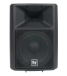
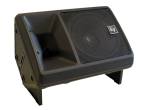

いやー、久しぶり！
最近何やってたのよー！

いやぁね、いろいろ楽しいことがたくさんあってねw
今日は音楽ネタみたいね？
世間は緊急事態宣言の2回目という中、お家時間が増えていますね。仕事しながら、音楽を聞く時間も増えています。自宅なので、ヘッドフォンとかじゃなくてスピーカーから音を出して聞いています。今までは絨毯のスピーカーをずっと使っていました。今回、エレクトロボイスというメーカーのSx100+というのを使ってみましたがとても良かったので、記念に記事にしておきます。
絨毯のスピーカーって何？
作り方とか載せてますので、よかったら見て行ってね！
こんな感じのスピーカーを自作して使っていました。意外と満足する音だったので、かれこれ10年くらい使っていました。再生環境の音源はPC（mac）からでアンプは2500円くらいのデジタルアンプ（TIのチップ、TPA3116D2）です。
オーディオマニアっていうわけではなくて、ごく普通か少しこだわっているくらいのものです。自分の音楽ライフ感は9年前に書いたココなんかを見てもらえるとわかるかなと。
そもそも好きな音って？
投稿日: in music
で、今回、新しく調達したのはライブとかでも使われている業務用のスピーカーです。アメリカ製で、メーカーはエレクトロボイスのSXシリーズ。
エレクトロボイス Sx100+
このスピーカーはこんな感じのものです。
エレクトロボイスのSXシリーズはSx300という型番もあってこれが一番流通しているようです。Sx100というのはSx300と大きさは同じですがユニットの出力が少し小さいものです。小さいといっても200Wあるので十分過ぎますけどね。比較するとこんな感じです。
| Sx100+ 12″ passive loudspeaker |
Sx300E 12″ passive loudspeaker |
|
|---|---|---|
|  |  | |
| Frequency Range (-10 dB) | 60 – 25000kHz | 50 – 20000kHz |
| Weatherized | No | No |
| Flying | Yes | Yes |
| Minimum Impedance | 5.6Ω | 5Ω |
| Nominal Impedance (Passive) | 8Ω | 8Ω |
| HF Transducer | 1.25-inch DH3/2010A | 1.25-inch DH3/2010A |
| Speaker Type | Full-Range, Mid-High, Two-Way | Full-Range, Mid-High, Two-Way |
| MF Transducer | ||
| Woofer Size | 12inch | 12inch |
| Powered or Passive | Passive | Passive |
| Frequency Range (-10 dB)¹ | ||
| Max. SPL/1m (calc)² | 127dB | 131/123dB () |
| Coverage (Nominal -6 dB) H | 65° () | 65° () |
| Coverage (Nominal -6 dB) V | 65° () | 65° () |
| LF Transducer | 12-inch | 12-inch DL12BFH |
| System Power Handling (Continuous/Program/Peak) | 200//800Watts () | 300/1200Watts () |
| Power Rating | 800W | |
| Crossover Frequency | 1500Hz | 1500Hz |
| Connector Type | ||
| Enclosure Material | Copolymer Composite | Copolymer Composite |
| Sensitivity 1 W/1 m | 98dB | 99dB |
| Available Color | Black or white | Black or white |
| Height | 23.07″ (586mm) | 23.07″ (586mm) |
| Width | 16.89″ (429mm) | 16.89″ (429mm) |
| Recommended High-Pass Frequency | ||
| Depth | 12.28″ (312mm) | 12.28″ (312mm) |
| Internal Crossover | Yes | Yes |
| Weight Net | 31.97lbs (14.5kg) | 39.02lbs (17.7kg) |
| Frequency Response (-3 dB) | ||
| Shipping Weight | ||
| Family | Sx | Sx |
| Chassis Size | 304.8 mm | 304.8 mm |
| Power Handling (Continuous / Peak) | ||
| Input Connections | Parallel Neutrik® NL4 | 2 four-pin Speakon |
| Maximum SPL | ||
| Directivity Index | 11.1dB () | 11.1dB () |
| Axial Sensitivity (SPL, 1 W @ 1 m) | 98dB | 99dB |
| Passive Power Handling | ||
| Transformer | ||
| Impedance |
Sx300は、中古価格でも１本２万以上してペアだと５万弱します。Sx100は現在の中古価格だと１本１万ちょいなのでペアでも2．５万くらいです。安ければ２万くらいです。これなら手が届きそうすね！ Sx300とは使われているユニットが少し違うのかもしれませんが、方向性は同じはずです。
https://products.electrovoice.com/binary/Sx100Plus_Engineering_Data_Sheet.PDF
興味をもったきっかけ
音の焦点でおなじみのプロケーブルさんの記事を読んで以来、このスピーカーがどんな音が出るのかずっと気になっていました。
現代の無敵のスピーカーEV（エレクトロボイス） SX300E エレクトロボイスのベストセラー商品！
https://procable.jp/etc/ev_sx300e.html
しかし、結構お値段がするんですよね。新品は１０万越えです。ずっと躊躇していました。しかし今回先に書いたように手が届きそうなので思い切ってポチりました！ ちなみに、プロケーブルさんの一押しはエレクトロボイスのTOUR X（TX1152）です。
Sx100の音はこんな感じ！
すぐに音を出したいので、スピコン端子を速攻作って聴いてみました。音のレビューは、主観なところが多いのですが、言葉で感想を書くと、こんな感じです。
・・・・・・！！！
神ってる！ 今までのとは異質！ 無限に音楽聞いてられる！
いい音って中毒性があって、自分の好きな曲を無限ループで聞いてしまいました。こんな楽曲を聴いていました。よかったらどうぞ。
１・２曲を聴いた時点で寒気がしました。こんなに良い曲だったんですね。
まとめ
今回、なんとなくわかったのは以下となります。
・スピーカーを変えたら世界が変わった！
・エレクトロボイスのSx100は、お財布にやさしく自分には衝撃的によかった
・絨毯スピーカーと違い、音像が出るし、そもそも質が違う
・音の焦点はこれから検討していきたい
・８畳の部屋なら５０W x 2 のデジタルアンプ（TPA3116D2）でも十分！
・しかし、スピーカーはそれなりに結構大きいのでそこは割り切る必要がある
・低音が少しだけ物足りないので、Mac側で少しブースト。これで完璧！
・S/N比 102dbアンプのホワイトノイズがこのSPをつけたらわかった
あとがき
これで音楽ライフが充実しそうです。まだ見知らぬ神曲に出会えるよう楽曲探求が楽しくなりますね！ これから音楽ネタも増えそうです。
著者にメッセージ
間違いのご指摘など、コメントじゃなくて、個人的にやりとりしたい場合はこちらからどうぞ。お返事が遅くなるときもありますが、ご了承を。